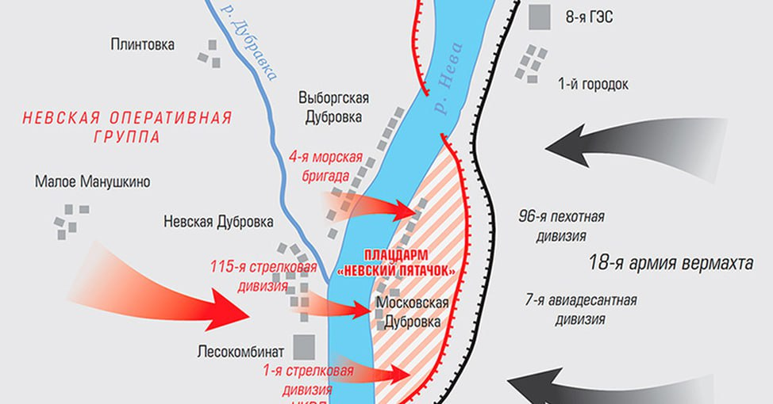
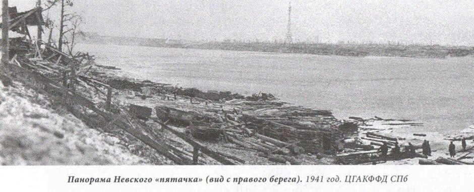
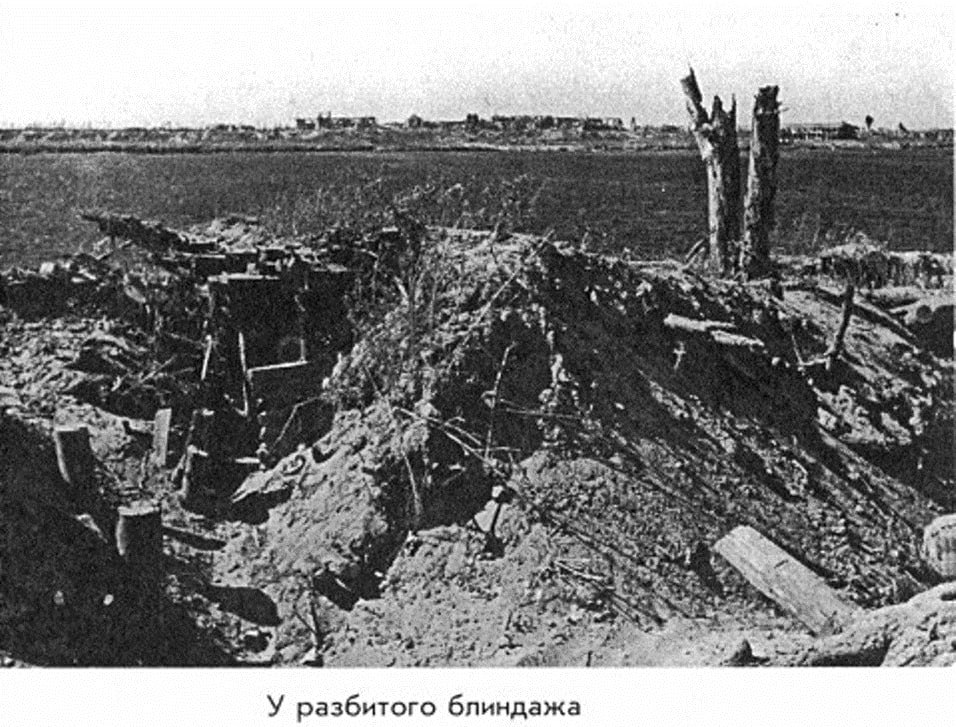

Невская Дубровка - посёлок воинской славы
С названием этого поселения связана одна из ярчайших страниц истории Великой Отечественной войны - оборона легендарного Невского "пятачка". Невская Дубровка была плацдармом, с которого переправлялись на левый берег, на "пятачок", советские части. В 1941-1943 гг. здесь шли кровопролитные бои, в ходе которых советские войска предпринимали попытки прорвать блокаду. На крохотном клочке оставили свои жизни по неофициальным данным от 300 до 500 тыс. наших воинов. 8 сентября 1941 г. немецко-фашистская армия прорвалась к окраинам Ленинграда. А ночью с 19 на 20 сентября 1941 года нашими солдатами был отвоёван плацдарм на левом берегу Невы длиной в 2 км, а шириной в 800 метров. В штабе командования, его назвали «Невским пятачком», поскольку на карте этот плацдарм можно было накрыть монетой в 5 копеек. Пополнение сюда прибывало безостановочно. Раненых отправляли на правый берег, а те, кто погиб, оставались здесь, в этой земле и в этой воде.
«Невский пятачок» - место самых кровопролитных боев на Ленинградском фронте. Ежедневно защитники плацдарма отражали по 12-16 атак противника, за сутки на них обрушивалось до 50 тысяч снарядов и авиабомб. Для десятков тысяч солдат и офицеров 600 метров водной переправы и оба берега стали братской могилой. 285 дней и ночей переправлялись от Невской Дубровки на перепаханный снарядами и минами клочок земли левого берега пехотинцы, моряки, саперы, танкисты и артиллеристы, переправлялись, чтобы ценою беспримерного героизма спасти Ленинград.
До войны в Невской Дубровке проживало около 26 000 человек. Это был большой и красивый поселок. Конечно, летом 1941 года жители были эвакуированы с правого берега. После ожесточенных боевых действий фашистами посёлок был разрушен полностью, случайно уцелело только здание почты. Сейчас население поселка около 8 000 человек.
